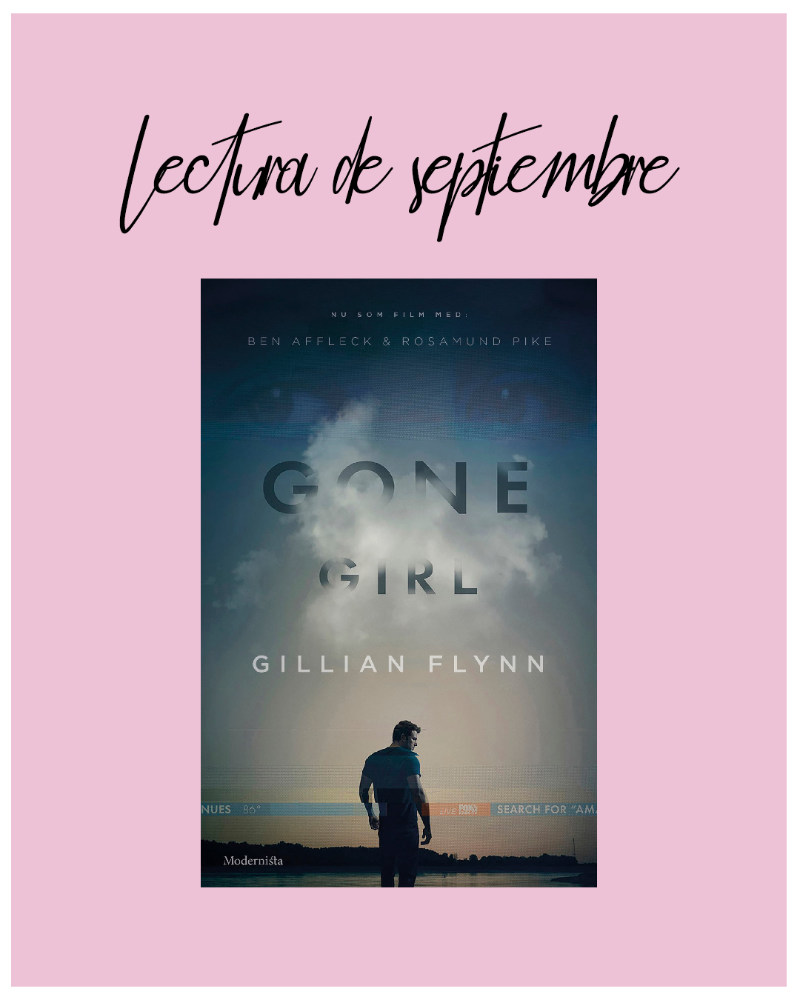

INTERRUMPIDAS Book Club
Gone Girl by Gillian Flynn
"The reader has to figure this out very gradually, because Ms. Flynn is impressively cagey about which details she chooses to withhold." -Janet Maslin para The New York Times, 2012.
Gone Girl by Gillian Flynn
"The reader has to figure this out very gradually, because Ms. Flynn is impressively cagey about which details she chooses to withhold." -Janet Maslin para The New York Times, 2012.
Interrumpidas es un club de lectura para mujeres y personas no binarias que aún tienen tumblr, se pasan el día en pinterest, escuchan Lana Del Rey, aman la literatura y están interesadas en el sufrimiento femenino, el enfrentarse al mundo como mujer y la estética de Sofia Coppola. Es decir, todas son bienvenidas si sienten que se identifican con las vibes del club. Algunos libros que hemos leído son My year of rest and relaxation, Prozac Nation, Normal People, Lapvona, etc.
Ser parte del club es tan simple como leer los libros que elegimos mensualmente. Para compartir tu opinión del libro puedes ser parte de la videoconferencia mensual o publicar tus pensamientos en tus propias redes sociales etiquetando el instagram del club para poder verlo. Para que te enteres de todo, síguenos en @interrumpidasbookclub
Las personas que asisten recurrentemente a las reuniones sugieren libros y los añadimos a la lista de lo que queremos leer, que ha sido inicialmente curada por @manufacturedpopstar. Al finalizar un mes, discutimos cuál de esos libros se ajusta más a lo que nos da ganas de leer en ese momento y ese es el libro del mes siguiente.